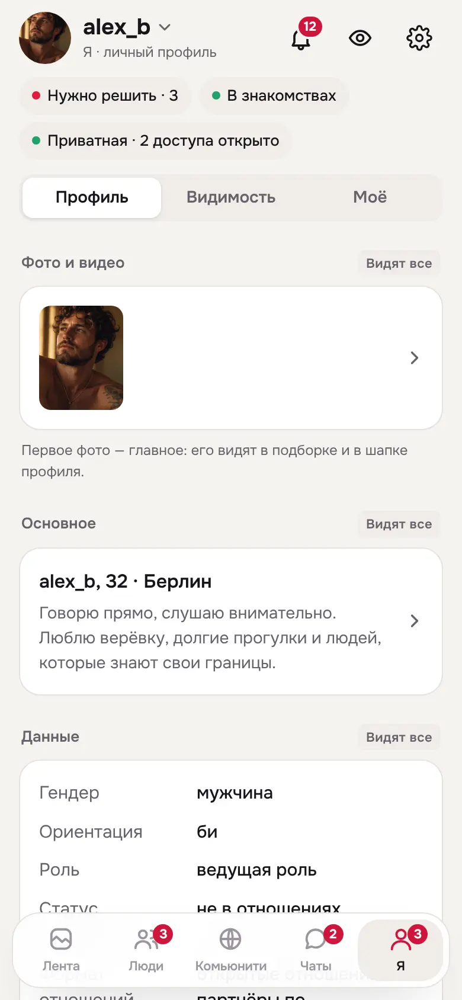
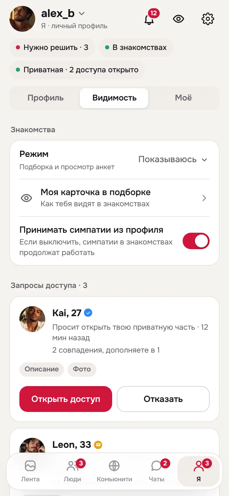
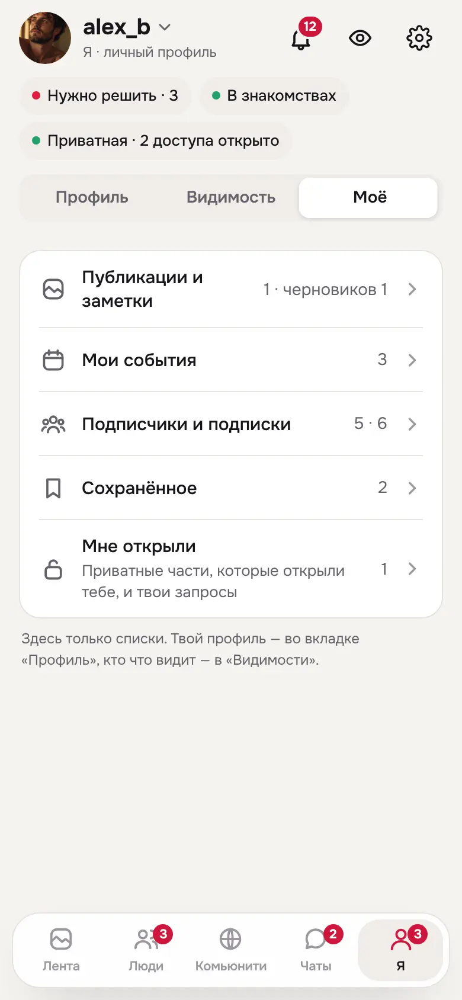
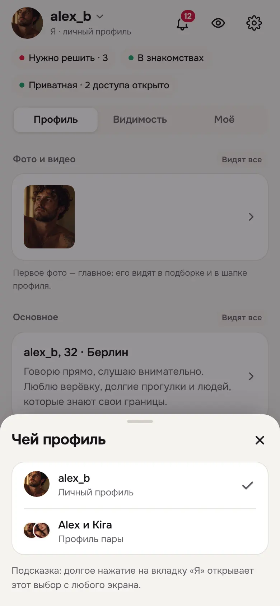
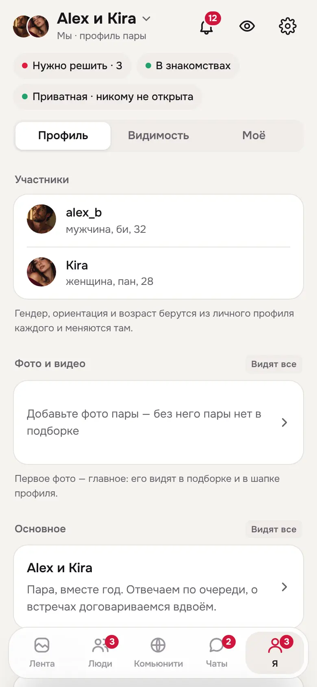
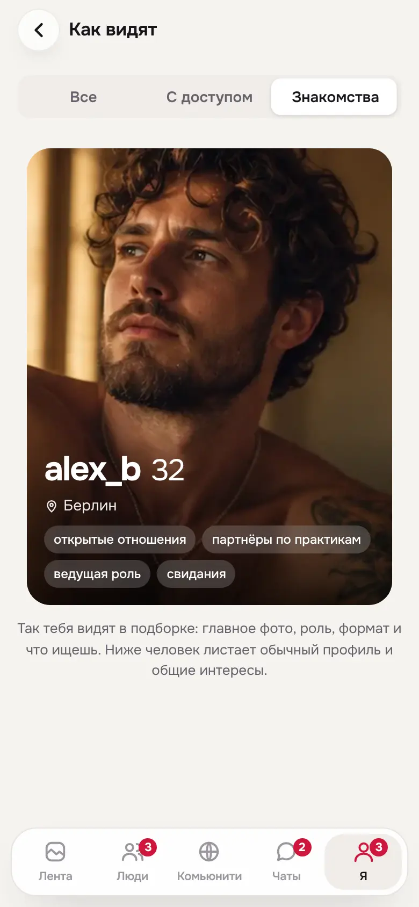
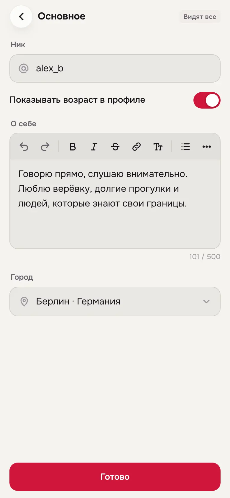

FetUre V18 — экран «Я»
V18 переделывает раздел «Я» по итогам аудита V14 и V17. В V14 один профиль жил в трёх видах. В V17 витрина, настройки и списки смешались в одной ленте. Теперь «Я» — один экран из трёх слоёв, каждая вещь лежит ровно в одном месте.
V14 и V17 сохранены без изменений. Журнал — docs/design-reference/V18-CHANGELOG.md. Контракт — tests/prototype-v18-contract.mjs: он прогоняет все правила V13 и V14 и добавляет проверки V18.
Решения владельца
| Вопрос | Решение |
|---|---|
| Название вкладки | «Я» |
| Где переключать «Я / Мы» | На имени в шапке экрана (стрелка ▾). Долгое нажатие на вкладку «Я» открывает тот же выбор с любого экрана. |
| Согласование в паре | Один черновик: новые правки просто обновляют его. Партнёр видит «было / станет». |
| «Поделиться профилем» | Убрано. |
Почему «Я / Мы» на имени, а не только на иконке вкладки
Только иконка — это скрытый жест: его никто не находит, а повторное нажатие на активную вкладку во всех приложениях прокручивает наверх. К тому же аватар пары на вкладке читался бы как «я теперь везде действую от пары». Автор в публикациях и чатах выбирается отдельно, у самого действия. Поэтому основной переключатель стоит на виду, на имени в шапке. Вкладка служит ускорителем: долгое нажатие (на компьютере — правый клик) открывает тот же лист «Чей профиль». Подсказка об этом — в самом листе.
Как устроен экран
Шапка
Аватар и имя со стрелкой («Я · личный профиль» или «Мы · профиль пары»). Справа колокольчик, «Как видят» (глаз) и общие настройки. Под ними строки состояния, которые нажимаются: «Нужно решить», режим знакомств, сколько людям открыта приватная часть.
Профиль — что я показываю
Блоки идут в том порядке, в каком их видят другие: фото и видео, основное, данные, интересы, приватная часть, галерея, связи. У каждого блока метка аудитории: «Видят все», «По доступу», «Только ты». Нажатие на блок открывает короткий редактор только этого блока с кнопкой «Готово». Если правку должен подтвердить партнёр, на кнопке написано «Отправить Kira». Интересы — один список с фильтром по аудитории, нажатие на любой интерес меняет его.
Видимость — кто что видит
Знакомства (режим и «Моя карточка в подборке»), запросы доступа с кнопками «Открыть / Отказать», приватная часть (вкл/выкл, кто может просить), кому открыто с «Отозвать», приватность профиля. У «Мы» здесь же показ пары в знакомствах, подтверждение партнёром, архив и «Разъединить». Из общих настроек эти переключатели убраны, вместо них ссылка «Знакомства и приватность → Я».
Моё — только списки
Публикации и заметки с черновиками, мои события, подписчики и подписки, сохранённое, «Мне открыли» вместе с моими запросами.
Как видят
Одно превью с тремя видами: «Все», «С доступом» и «Знакомства» — карточка в подборке, которой раньше не было нигде. Кнопки в превью неактивны, тостов «демо-режим» больше нет.
Пара
«Мы» — тот же экран с данными пары. Вверху участники: их гендер, ориентация и возраст берутся из личных профилей. Если изменения ждут партнёра, вверху полоса «Изменения ждут Kira. Это один черновик: новые правки просто обновят его». Партнёр видит «Kira предлагает изменения», открывает разницу по полям и решает «Одобрить» или «Вернуть».
Экраны







Что сознательно стало дороже
- «Сохранённое» и подписчики теперь на одно нажатие дальше: они в «Моё». Слой и выбранный профиль запоминаются.
- Общей кнопки «Сохранить» нет: каждый блок сохраняется сам. В паре правки копятся в одном черновике.
- Полная форма редактора (P02 без блока) осталась для старых ссылок. С экрана «Я» в неё не ведёт ни одна кнопка.
Проверено
Контракт V18 пройден, он включает все правила V13 и V14. Chromium: 17 сценариев экрана «Я» × 3 персоны × RU/EN × 320/390/768/1440 × светлая/тёмная тема — 720 состояний. Сценарии с парой прогонялись только у пользователя с парой. Ошибок JS и переполнения по ширине нет. Длинные тексты, «враждебный» ввод и текст без пробелов (320/390) — 186 состояний, чисто. Кликами проверено: правка блока сохраняется, долгое нажатие на «Я» открывает выбор профиля, выключение приватной части спрашивает подтверждение, ссылка из «Настроек» ведёт в «Я → Видимость».
Не проверено: реальные устройства, экранные дикторы, масштаб 200 %, живая пара с двух клиентов, проверка на людях.